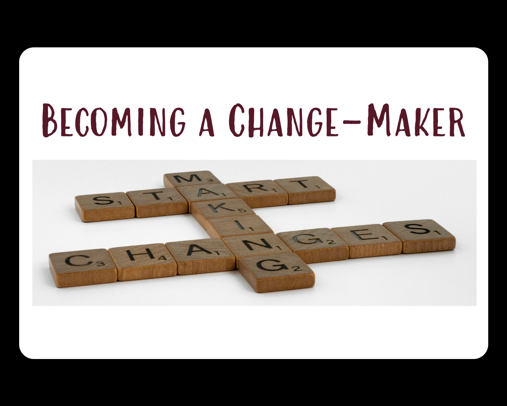

Week 12- Journal Entry
Are We Not All Beggars?
“Rich or poor, we are to ‘do what we can’ when others are in need.”
What an inspiring message from our dear President Holland! I was deeply touched by his reminder that Jesus’s first and foremost duty as the Messiah was to bless the poor, including the poor in spirit. I loved how he shared the example of Mother Teresa of Calcutta, who said her work was about love, not statistics. Even with so many in need beyond her reach, she faithfully served those she could, saying, “What we do is nothing but a drop in the ocean. But if we didn’t do it, the ocean would be one drop less than it is.” It is a beautiful reminder that, rich or poor, each of us is called to “do what we can” to help those in need, no matter how small our contribution may seem.
President Holland also reminded us of the balance between helping others and taking personal responsibility. He encouraged us to work hard, be self-reliant, and use our own resources wisely, while trusting that God will guide us in compassionate acts of discipleship as we sincerely seek to serve. I was especially moved by his tribute to President Thomas S. Monson, who gave so generously to those in need, even in small personal ways, like flying home from economically devastated East Germany in his house slippers because he had given away his suit, shirts, and even his shoes. This talk inspired me to want to become more like my Savior and to follow the example of my wonderful Church leaders. Their lives show what it means to serve with love, selflessness, and devotion. I hope to apply these lessons in my own life, knowing that even the smallest acts of kindness and service are meaningful and precious in God’s eyes.
What's a Business For?
“The purpose of a business is not to make a profit full stop. It is to make a profit so that the business can do something more or better.”
Reading Charles Handy’s “What’s a Business For?” made me reflect on the deeper purpose behind the work we do and the companies we support. Business is not just about making money or boosting share prices; profit is necessary, but it is only a tool, a means to something greater. What really matters, Handy reminds us, is creating value for people, serving communities, and treating employees and stakeholders as more than just numbers on a balance sheet. I was struck by how fragile trust and integrity are in business and how easily a focus on short-term gain can erode the true potential of capitalism to do good. Learning about the European approach, where employees are treated as part of a community and sustainability and long-term thinking are prioritized, inspired me to think differently about the organizations I support. It also made me realize that even small choices, prioritizing ethics, serving others, and looking beyond immediate gain, can create a meaningful impact in the world.
Microlending: Toward a Poverty-Free World
"All human beings are endowed with unlimited potential. Because of barriers created by our societies, individual people never get the full opportunity to bring out their potential."
Reading Microlending: Toward a Poverty-Free World by Muhammad Yunus made me see poverty in a completely new way. I learned that it is not just a result of bad luck or lack of effort, but often created by systems that exclude people who simply need a chance. Yunus showed how something as small as a tiny loan can empower someone, unlock their creativity, and change their life. I was struck by how traditional economics often overlooks the potential of ordinary people and treats them as if they have no power to create or change. This reading reminded me that credit, trust, and opportunity are not just financial tools but ways to restore dignity and hope. It made me reflect on how small acts of support and social responsibility can create real impact, and it gave me hope that a world without poverty is possible if we are willing to see differently and act with purpose.
Acton Hero Sarah Endline
“Being a woman is a great advantage. Women tend to be really intuitive, they look at the big picture, and those two things alone are so critical for entrepreneurship. You’re the one at the head of the boat making sure you can navigate the rough waters. You also make the hiring decisions at the end of the day, and a lot of team decisions are based on intuition. So to have those two things as strengths is a really amazing thing.”
I love Sarah Endline’s story because it shows that entrepreneurship is about more than just launching a product. It is about passion, purpose, and perseverance. Following what you truly love, like her love for candy, can lead to a business that excites you every day. At the same time, success requires research, understanding the market, and learning from others in the industry. Challenges are inevitable, so adaptability is key and entrepreneurship is a marathon, not a sprint. Managing your energy, relationships, and well-being matters just as much as the business itself. Being a woman entrepreneur brings unique strengths, like intuition and big-picture thinking, which guide decision-making and team building. Beyond the product, Sarah emphasizes creating a company culture that reflects your values, fosters social responsibility, celebrates diversity, and makes a meaningful impact on the world. Her story reminds me that business can truly be a force for good when led with vision and heart.
A New Breed of Entrepreneur
“Humanity can set aside our historic problems and conquer even the worst disasters if we have the will and work together”
Watching Larry Brilliant’s talk gave me so much insight. I realized that true impact comes when people use their skills and opportunities not just for personal success but to solve real problems that affect humanity. His story about eradicating smallpox reminded me how persistence, teamwork, and vision can overcome challenges that seem impossible. It also made me reflect on how connected we all are and how much we can achieve when we collaborate across boundaries. I left inspired to think bigger about how my own actions, no matter how small, could contribute to positive change in the world.
Make It Personal and Make It Work
“When what you do becomes personal, you care more, try harder, and grow further.”
Watching Make It Personal and Make It Work was truly inspiring to me. It showed how important it is to connect what we do with who we are and not just go through the motions. I realized that learning becomes more meaningful when I take responsibility for it and apply it to my own life. The message reminded me that real growth comes from being intentional, putting in sincere effort, and choosing to keep going even when things feel difficult. It also helped me see that when something becomes personal, I naturally care more and give my best. This encouraged me to be more engaged, take ownership of my progress, and approach my goals with greater purpose and commitment.
Entrepreneurship and Consecration
“Are we maximizing profits, or are we maximizing our potential to do good?”
Watching Entrepreneurship and Consecration by Robert Gay helped me reflect more deeply on what it means to build something in this life. Instead of focusing only on outcomes or achievements, it reminded me that what truly matters is who we are becoming and how we use what we have to bless others. I was especially touched by the idea that our work can be an offering to God when it is done with love and a sincere desire to help. It made me pause and think about my own efforts and how I can be more mindful in using my talents to uplift those around me.
This message also reminded me that there is a higher purpose behind the opportunities we receive. It encouraged me to look beyond myself and be more aware of the needs of others, trusting that I can be guided to act in the right moments. I know I can be more intentional, listen more closely to spiritual impressions, and remember that even small, quiet acts of goodness can carry deep meaning when they come from the heart.
W12 Book Report: A Field Guide for the Hero's Journey
“Each successful journey gives you the chance to make an even bigger impact. But in the end, it’s not about that. It’s about becoming who you were meant to be, in service to the others, and for me, ultimately submitting to my God and Savior.”
I Really enjoyed reading A Field Guide for the Hero's Journey, and taking notes for my book report made me pay close attention to the details and the lessons it offers. The book is full of meaningful stories that encouraged me to reflect on courage, perseverance, and personal growth. I loved the perspective of the authors and how they show that heroes are not born but created through the challenges we face and the choices we make. Each story highlights the value of effort, reflection, and learning from both successes and mistakes. The lessons feel real and easy to apply to everyday life, which made reading both enjoyable and inspiring.
What stood out to me most is that true success is more than reaching goals. It is about who we become along the journey and how we use our gifts to help and uplift others. The book encourages living with purpose, facing challenges bravely, and appreciating the blessings already present in our lives. Its teachings feel timeless and will continue to guide me long after I finish reading. This book reminded me that we all have the power to grow, serve, and shape the hero within ourselves.